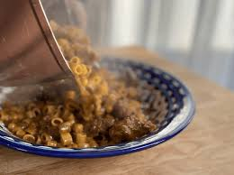

Libyan Umbakubka
Odin Recipes

Mbakbaka is about to become your spicy Arabic pasta obsession — this dish is a full-on flavor explosion! It’s not
only packed with all the right spices but it also boasts the perfect texture. And the best part? It’s a breeze
to whip up! Get ready to fall head over heels for this easy, spicy one-pot pasta!
Ingredients
- 1 onion
- 4 cloves of garlic
- 4 chillies
- 1 kg of lamb meat
- 4 tomatoes blended
- 2 tablespoons tomato paste
- salt and pepper
- 1 tablespoon turmeric
- 1 tablspoon dried basil
- 5 tablespoon olive oil
- 2 to 3 cups pasta
Steps
- start by frying the onion in the olive oil
- then add the meat with all the spices and tomato paste.
- once aromatic add the 4 blended tomatoes with a cup of water and let it simmer on medium heat till the meat
is tender. For about 40 minutes.
-
add the pasta with 2 cups of water and let the pasta cook if you find it too thick you can adjust it with
water till you reach the consistency you prefer.
Odin Recipes